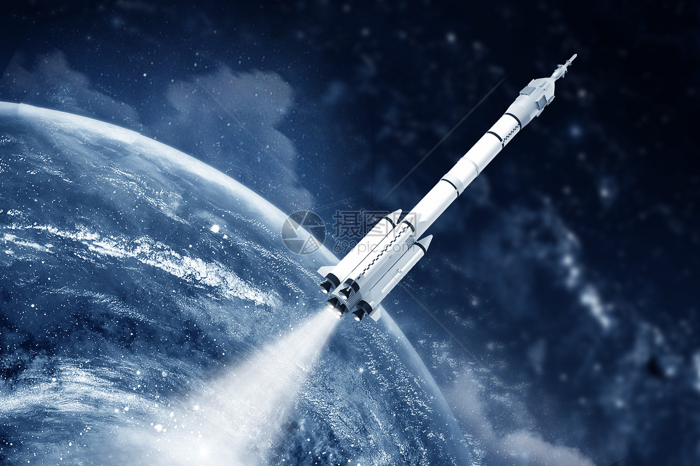

人类航天探索史
从1961年加加林首次进入太空，到1969年阿姆斯特朗踏上月球，再到如今的空间站与国际合作，人类从未停止过对宇宙的向往。

中国航天事业也取得了举世瞩目的成就，神舟飞天、嫦娥揽月、天问探火，我们在星辰大海的征途上不断迈进。
返回主页从1961年加加林首次进入太空，到1969年阿姆斯特朗踏上月球，再到如今的空间站与国际合作，人类从未停止过对宇宙的向往。

中国航天事业也取得了举世瞩目的成就，神舟飞天、嫦娥揽月、天问探火，我们在星辰大海的征途上不断迈进。
返回主页